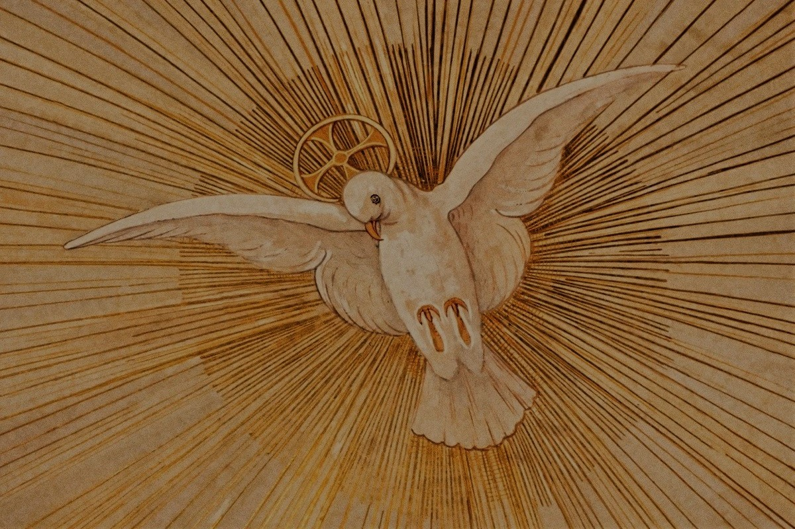

Salut ! Je suis un Chrétien Catholique de rite Maronite.
Passionné de Jésus-Christ et de Sa Ste Mère, je me lance içi pour partager ma foi et ce qui y découle.
J'aime beaucoup les vies de différents Saints de différentes spiritualitées et surtout les victimes pour la conversion des pécheurs comme La Bx Dina Bélanger (Moniale Québequoise) ou Ste Marie Madelaine de Pazzi (Carmélite Italienne), mais je suis personnellement "Un Montfortain", ou plus simplement, j'aime beaucoup, et je suit la spiritualité de St Louis Marie Grignon de Montfort.
Vous trouverez sur ce site des diverses rubriques:
1' Sur Jésus et La Ste Vierge
2' Sur l'Eglise
3' Sur Les Saints
